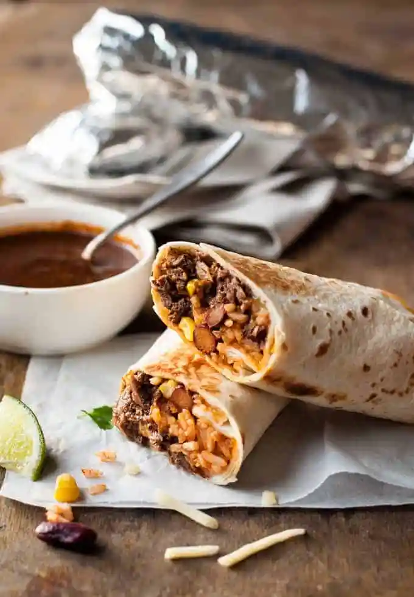

Burritos
Home

Burritos
Freezer standby meals don’t get any better than this – burritos filled with Mexican Shredded Beef in a rich, thick sauce, and stuffed with Mexican Red Rice and cheese. SO GOOD! You will love this Shredded Beef Burritos recipe.
Ingredients
- 8 large extra soft flour tortillas
- 1 1/2 to 2 cups shredded cheese
- 3 to 4 cups Mexican Shredded Beef plus sauce
- 1 cup finely chopped coriander / cilantro
- 2 cups Mexican Red Rice
- 400g/14oz can corn kernels
- 400g/14oz can black beans
Instructions
- Microwave half the tortillas very briefly to warm them up (15 seconds or so). This ensures they don't crack when you roll them.
- Place 1 tortilla on a workbench - cover the rest with a tea towel to keep them warm.
- Place cheese down the middle of the tortilla, then top with 1/3 cup of beef, some corn, beans, then 1/4 cup rice.
- Roll the burrito up. (Note 2) Wrap in foil to hold it together.
- If you are serving it immediately, heat a skillet over medium heat. Cook the burritos for around 4 to 5 minutes on each side to make the tortilla brown and heat the inside through.
- If freezing, place in the freezer. To reheat, you can either bake from frozen (with foil on) at 350F/180C for about 40 to 45 minutes, or thaw and cook in the skillet per above. You could microwave it (remove the foil) but I like my burritos a bit crispy!